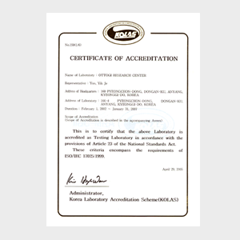
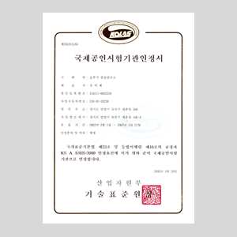

사업장 소개
- 중앙 연구소
- 참신한 발상과 급변하는 소비자의 기호에 빠르게 대응하며 제품에 대한 소비자 욕구를 신속하게 수렵하고 또 예측하면서
언제나 새로운 식품문화 개발에 노력하고 있습니다.
국제시험기관인정제도
KOLAS (Korea Laboratory Accreditation Scheme)
 공인시험기관인증서 (Eng)  공인시험기관인증서 (Kor)
- 국가적 권위를 인정받은 인정기구(Accreditation Body: 산업자원부 기술표준원)가 국제적으로 인정된 평가기준(ISO 17025 등)에 따라 시험,검사기관의 시험능력 및 시험환경 등을 평가하여 공인시험,검사기관으로 지정함으로써, 그 기관이 발급한 시험성적서가 국제적으로 공신력을 갖추고 있음을 인정해 주는 제도로 선진국에서는 시험소의 능력향상 및 대외무역에 있어서의 기술장벽 대처수단으로 활용하는 제도입니다.
- 취득현황 및 운영
- 화학분야 및 생물학분야에 걸쳐 획득
- 국2002년 2월 1일(인정번호 KT-150) 화학분야(식품 및 식품원료, 식품첨가물, 식품포장재 미량성분) 및 생물학분야(식품의 미생물시험)에 걸쳐 획득하였으며, 이에 시험기관 품질시스템의 체계적인 정비, 공인시험기관에서 발행한 시험성적서의 국제적 수용, 시험기관의 시험 및 분석능력의 제고와 기술적 신뢰성 보장, 새로운 시험기법의 도입 및 연구촉진, 대외적인 신뢰도와 이미지 제고, 시험과 관련된 무역기술장벽 타개 등 기대효과를 얻고 있습니다.
검증된 자격을 갖춘 인력(시험원, 기술책임자, 품질책임자), 검교정으로 확인된 시험,검사 측정설비. 고가의 분석장비(GC/MS, GC, LC, ICP, TLC/FID, IC, PCR, 미생물동정기 외 다수)를 갖추고 순도가 검증된 시약 및 불확도가 확인된 시험 초자기구를 사용하여 시험성적서를 발행하고 있으며, 분석결과의 정확도를 다른 시험기관과 비교 평가받기 위해 국제적으로 인증된 시험기관이 주최하는 비교숙련도시험에도 매년 참가하여 우수한 평가를 얻고 있습니다
인정분야 및 항목
| 식품 | 일반성분 | 수분,조단백 (총질소),조지방,조회분 |
|---|---|---|
| 맛성분 | 유기산류, 당류,수소이온농도 (pH), 염도, 산도, 당도 | |
| 중금속 및 무기성분 | 중금속, 나트륨, 칼륨, 크롬, 모리브덴, 망간, 철, 코발트, 니켈, 구리, 아연, 카드뮴, 알루미늄, 주석, 납, 인, 비소, 세레늄 | |
| 유지성분 | 지방산류, 콜레스테롤, 산가, 과산화물가, 융점 | |
| 비타민 | 비타민A, 비타민C, 비타민E | |
| 첨가물 (보존료,산화방지제) | 디히드로초산 및 그 염류, 소르빈산 및 그 염류, 안식향상 및 그염류, 파라옥시안식향산 및 그 염류, 아황산 및 그 염류, 부틸히드록시아니졸, 디부틸히드록시톨루엔, 몰식자산프로필, 터셔리부틸히드록시퀴논,EDTA-2Na, EDTA-2Ca | |
| 식품포장재 | 잔류용제 | 톨루엔, 에칠아세테이트, 메칠에칠케톤, 이소프로필알콜, 메탄올, 에탄올, 아세톤 |
기타 분석기능 항복
| 식품 | 아미노산 | 필수아미노산 등 18종 |
|---|---|---|
| 맛성분 | 캡사이신, 알릴이소티오시아네이트, 핵산류 (IMP, GMP) | |
| 색성분 | 타르색소 (적색2호, 적색3호, 적색40호, 황색4호, 청색1호, 청색2호, 녹색3호), 색도 (L,a,b,ΔE) | |
| 향성분 | 향기성분, 이취성분 | |
| 유지성분 | 글리세리드(TG, DG, MG, FFA), 고체지지수, AOM Test | |
| 이 온 | 양이온, 음이온 | |
| 첨가물 | 아질산염 | |
| 농 약 | 유기염소계, 유기인계, 카바메이트계 등 63종 | |
| 가 스 | 질소, 산소, 이산화탄소 | |
| 기능성성분 | 리그난(세사민, 세사몰린, 세사몰 등), 폴리페놀류(카테킨, 카테콜, 글로로겐산, 에피카테킨, 피로갈롤 등) | |
| 미생물 | 세균발육시험 | |
| 식품포장재 | 포 장 | 용기수직압축강도, 박스압축강도, 접착강도, 산소투과도, 수분투과도, 포장재질, 링크러쉬 |